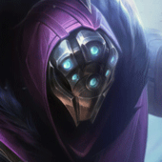

核心裝備
 暮夜與黎明
暮夜與黎明技能接普攻能重複觸發咒刃，生命、攻速與技能加速都很契合。
 殞落王者之劍
殞落王者之劍攻速、吸血與當前生命傷害讓賈克斯能處理前排。
 死亡之舞
死亡之舞延後物理傷害並靠擊殺回復，提升跳入多人後的續戰。
 史特拉克手套
史特拉克手套被五人集火時提供大型護盾，是團戰版賈克斯的重要容錯。
 守護天使
守護天使後期進場失誤仍能再打一輪。

Jax · 反普攻／跳斬黏人型混傷戰士
3 技不是看到人就開；最好等敵方射手真正開始輸出或你準備跳入時再開。先疊被動攻速，再用 1 技進場；2 技要拿來重置普攻，盡快打出大絕第三下被動。
本站評級理由：賈克斯的 3 技能閃避普攻並在結束時範圍暈眩，對 ARAM 常見雙射手或普攻核心非常有效；舊版標準 ARAM 還有 115% 傷害輸出補償。7.1b 提高成長物防、被動攻速與 3 技最大生命傷害後，正面長戰能力更好，但沒有側線可分推，必須把價值放在團戰反打。
Riot 2.2c 標準 ARAM 將賈克斯傷害加成由 5% 提高至 15%，即 115% 傷害輸出；本站未找到後續標準 ARAM 回調，維持 115%／100%。7.1b 另強化成長物防、被動攻速與反擊風暴最大生命傷害。
技能接普攻能重複觸發咒刃，生命、攻速與技能加速都很契合。
攻速、吸血與當前生命傷害讓賈克斯能處理前排。
延後物理傷害並靠擊殺回復，提升跳入多人後的續戰。
被五人集火時提供大型護盾，是團戰版賈克斯的重要容錯。
後期進場失誤仍能再打一輪。

對普攻與物理陣容最實用。

三級鞋提高近戰承傷；法控多時可改水星系。

普攻與技能混合輸出很快疊滿。

補前中期跳斬與普攻傷害。

低血量長戰更容易反殺。

加速被動與大絕第三下的觸發。

跳進人群時降低第一輪爆發。

閃現 3 技暈多人或補跳斬角度。

長團保持貼身，減少被遠程風箏。
2 技 > 1 技 > 3 技
ARAM 開局三個基礎技能各點 1 級，之後主升 2 技、次升 1 技；大絕能點就點。
先用兵線或前排疊被動，不要空著攻速直接跳五人。3 技主要拿來躲射手輸出與反暈。
兩件套後開始能正面打前排。找敵方主要普攻核心，1 技跳入後開 3 技逼位移，2 技重置普攻打第三下。
沒有分推環境就把自己當反開戰士。敵方先手進來時反而最好打；主動開戰時要確保閃現、3 技或守護天使至少留一層保命。
 三相之力
三相之力可替換暮夜與黎明，打脆皮時爆發更直接。
 智慧末刃
智慧末刃替換死亡之舞，提高魔抗、攻速與混傷。
 蘭頓之兆
蘭頓之兆替換守護天使，專門壓低暴擊壓力。
看遊戲卡片下方分類 → 點相同分類 → 看左側 S+／S／A。
被動攻速與二技能重置普攻讓賈克斯能高頻觸發命中特效。
一技能跳躍是穩定位移，能直接啟動身法類增幅並黏住後排。
二技能重置普攻、三技能反擊與大絕坦度都依賴技能循環。
跳斬後的穿透、防禦與追加傷害能直接放大進場收益。
三技能暈眩是主要反打手段，控制型增幅命中後價值很高。
普攻縮技能、技能普攻循環與保命類單卡都很適合長時間纏鬥。
v80.12.0 ARAM A 第三批：賈克斯採標準 ARAM 115% 傷害輸出，並同步 7.1b 耐久、被動攻速與 3 技增強。
ARAM 使用獨立於召喚峽谷的資料集；本站會把官方模式平衡、單線 5v5 特性與出裝／符文適配分開判斷，而不是直接複製峽谷配置。